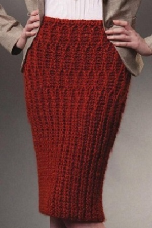

Элегантно, просто и красиво. Дополнит любой образ женственностю и очарованием. Должна быть в гардеробе любой модницы.

Порядок действий:
Свяжите образец размерами 10х10 (если образец будет меньше, то точность расчетов будет снижена).
Измерьте его и и введите в соответствующие поля.
Затем посчитайте количество и в образце и тоже введите соответствующие им полям.
Остальные расчеты относительно плотности вязания программа выполнит самостоятельно.
Снимите мерки с модели, на каторую будет связана вещь. Введите их в соответствующие поля.
По умолчанию будет расчитана только схема. Если Вам нужна выкройка, отметьте соответствующий флажек.